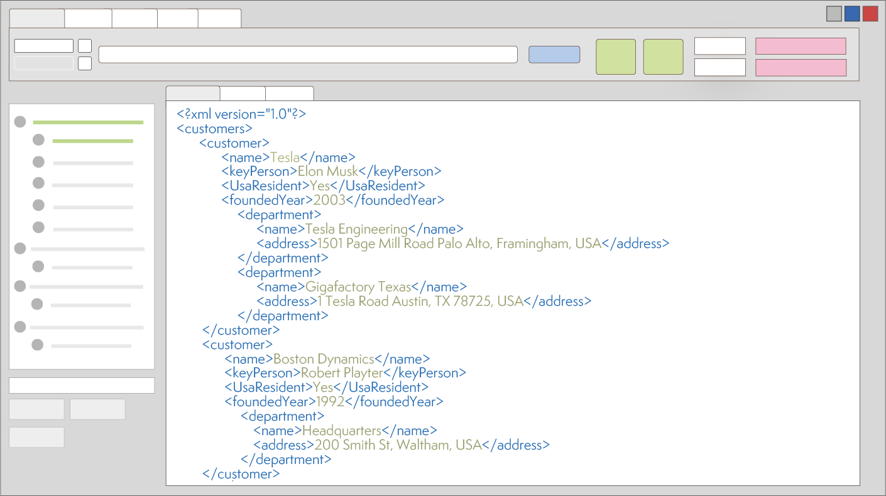

Easy way to parse XML
SmartXML представляет из себя No-Code решение для парсинга XML файлов с широким спектром возможностей.
Решение хорошо подходит как для аналитиков, так и для программистов регулярно работающих с XML.
SmartXML позволяет:
- Выполнять классификацию документов.
- Обрабатывать документы у которых отсутствует фиксированная схема данных.
- Гибко настраивать требуемый для извлечения набор полей.
- Генерировать из XML JSON/SQL и загружать их в БД, сохраняя при этом иерархические связи.
- Использовать встроенный грамматики (tiny NLP) для предварительной обработки данных.
- и многое другое.